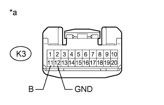
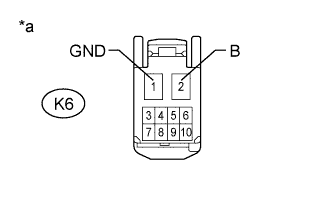
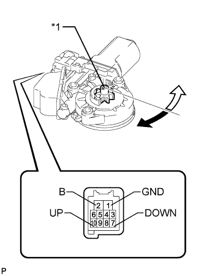

POWER WINDOW CONTROL SYSTEM > Driver Side Power Window does not Operate with Power Window Master Switch |
| 1.CHECK FOR DTC (B2312) |
Check if DTC B2312 is output (Click here).
|
| ||||
| OK | |
| 2.READ VALUE USING INTELLIGENT TESTER (MULTIPLEX NETWORK MASTER SWITCH) |
Use the Data List to check if the multiplex network master switch is functioning properly (Click here).
| Tester Display | Measurement Item/Range | Normal Condition | Diagnostic Note |
| D Door P/W Up SW | Driver side power window manual up signal / ON or OFF | ON: Driver side power window manual up switch operated OFF: Driver side power window switch not operated | - |
| D Door P/W Down SW | Driver side power window manual down signal / ON or OFF | ON: Driver side power window manual down switch operated OFF: Driver side power window switch not operated | - |
|
| ||||
| OK | |
| 3.PERFORM ACTIVE TEST USING INTELLIGENT TESTER (POWER WINDOW) |
Select the Active Test, use the intelligent tester to generate a control command, and then check that power window regulator motor operates (Click here).
| Tester Display | Test Part | Control Range | Diagnostic Note |
| Power Window | Passenger side power window | OFF/UP/DOWN | - |
|
| ||||
| OK | ||
| ||
| 4.CHECK HARNESS AND CONNECTOR (MULTIPLEX NETWORK MASTER SWITCH ASSEMBLY - BATTERY AND BODY GROUND) |
|  |
Disconnect the K3 multiplex network master switch connector.
Measure the voltage according to the value(s) in the table below.
| Tester Connection | Condition | Specified Condition |
| K3-11 (B) - Body ground | Always | 11 to 14 V |
Measure the resistance according to the value(s) in the table below.
| Tester Connection | Condition | Specified Condition |
| K3-12 (GND) - Body ground | Always | Below 1 Ω |
| *a | Front view of wire harness connector (to Multiplex Network Master Switch Assembly) |
|
| ||||
| OK | |
| 5.CHECK HARNESS AND CONNECTOR (FRONT POWER WINDOW REGULATOR MOTOR ASSEMBLY LH - BATTERY AND BODY GROUND) |
|  |
Disconnect the K6 power window regulator motor connector.
Measure the voltage according to the value(s) in the table below.
| Tester Connection | Condition | Specified Condition |
| K6-2 (B) - Body ground | Always | 11 to 14 V |
Measure the resistance according to the value(s) in the table below.
| Tester Connection | Condition | Specified Condition |
| K6-1 (GND) - Body ground | Always | Below 1 Ω |
| *a | Front view of wire harness connector (to Front Power Window Regulator Motor Assembly LH) |
|
| ||||
| OK | |
| 6.CHECK HARNESS AND CONNECTOR (MULTIPLEX NETWORK MASTER SWITCH ASSEMBLY - FRONT POWER WINDOW REGULATOR MOTOR ASSEMBLY LH) |
Disconnect the K3 multiplex network master switch connector.
Disconnect the K6 power window regulator motor connector.
Measure the resistance according to the value(s) in the table below.
| Tester Connection | Condition | Specified Condition |
| K3-20 (UP) - K6-10 (UP) | Always | Below 1 Ω |
| K3-15 (DOWN) - K6-7 (DOWN) | Always | Below 1 Ω |
| K3-20 (UP) - Body ground | Always | 10 kΩ or higher |
| K3-15 (DOWN) - Body ground | Always | 10 kΩ or higher |
|
| ||||
| OK | |
| 7.INSPECT FRONT POWER WINDOW REGULATOR MOTOR ASSEMBLY LH |
|  |
Remove the front power window regulator motor LH (Click here).
Check that the window regulator motor moves smoothly as follows.
| Measurement Condition | Specified Condition |
| Motor gear rotates clockwise (Up) |
| Motor gear rotates counterclockwise (Down) |
| *1 | Motor Gear |
 | Clockwise |
 | Counterclockwise |
|
| ||||
| OK | ||
| ||